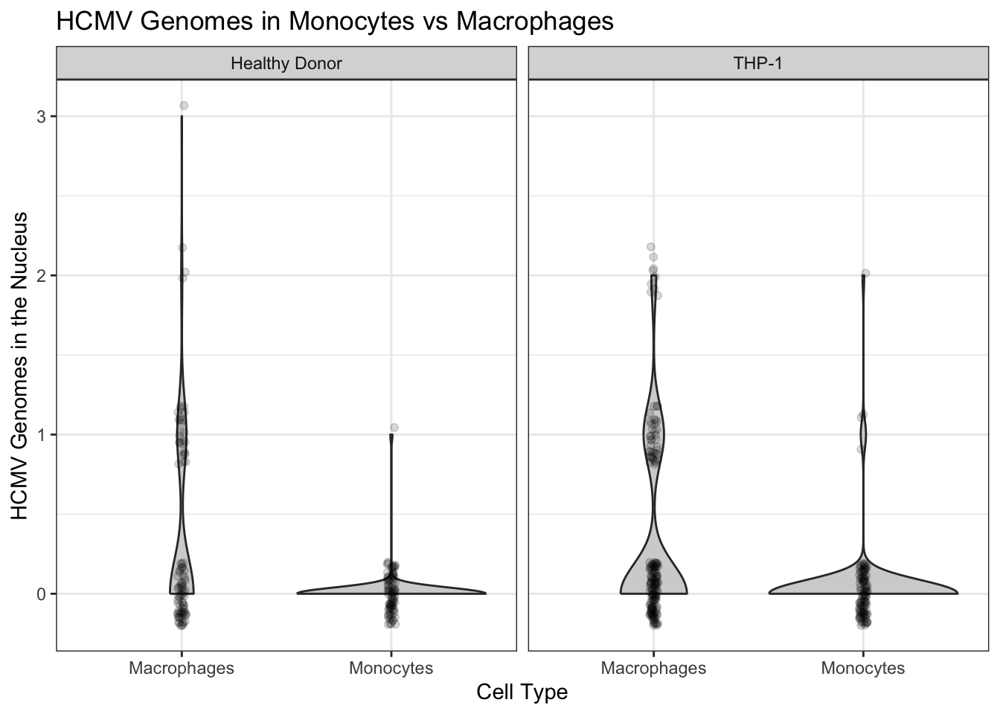
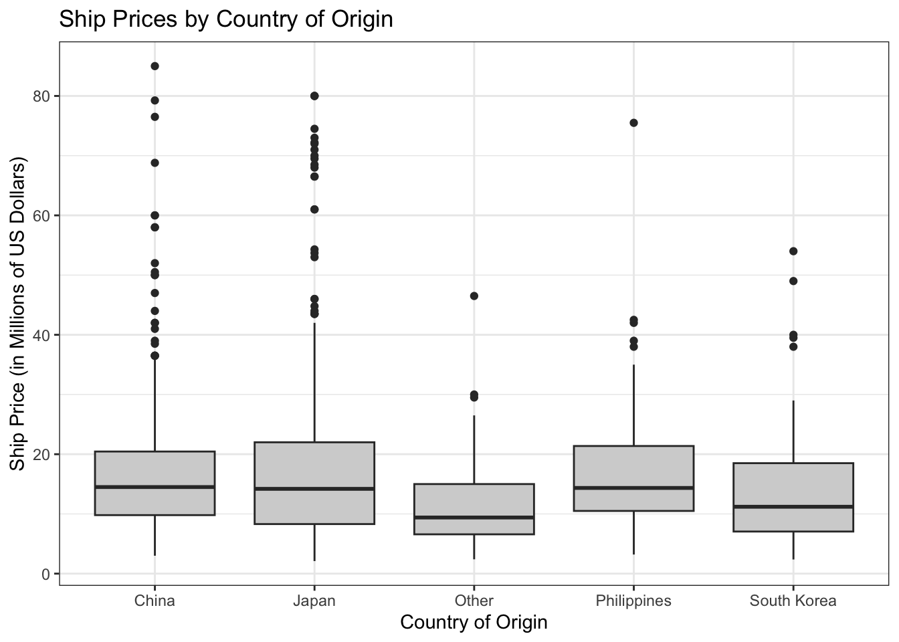
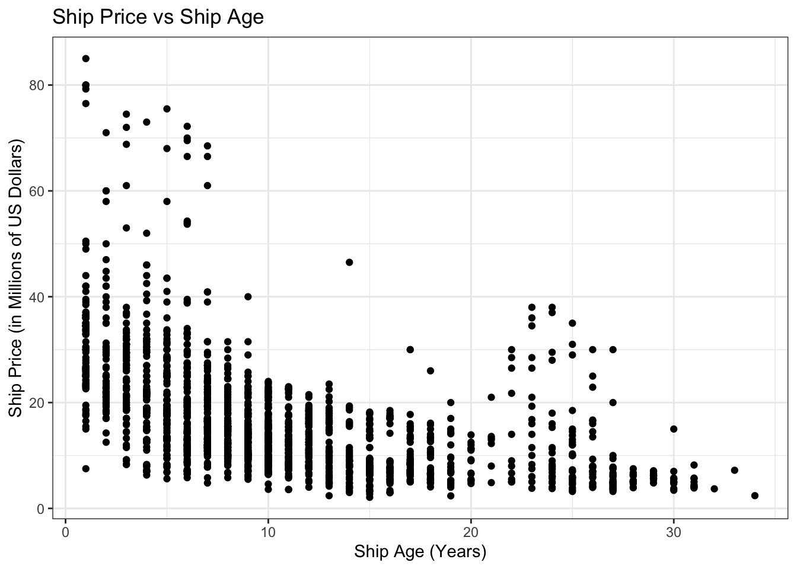

Lab Five-Six – Data Wrangling in R
Tips
- Complete the tasks below. Make sure to start your solutions in on a new line that starts with “Solution:”.
- Make sure to use the Quarto Cheatsheet. This will make completing and writing up the lab much easier.
- Make sure to use “enter” to make your code readable, so it doesn’t run off the page. I switched the Quarto document to automatically render to .pdf, so you can see what you’re submitting by default. You can switch back for the highlighting by moving the html block above the pdf block in the YAML header.
- Use the pipe operator (
|>). It makes the data wrangling tasks much easier to write. - Use
head(...)orglimpse(...)often to ensure your code did what you wanted it to and that you haven’t accidentally deleted their entire dataset with a bad filter. - Don’t forget that you can copy-and-paste code when you’re doing something similar as we did in class!
Timeline
- Week of 2/16: Aim to complete the data wrangling sections
- Week of 2/23: Aim to complete the data summaries sections
1 Biomedical Science Data
Kitsberg et al. (2025) collect data on the Human Cytomegalovirus (HCMV). HCMV is a member of the herpesvirus family – the same family that includes: chickenpox, mononucleosis (mono), and cold sores. Prevalence is high with a worldwide seroprevalence of 24% to 100% (Gupta and Shorman 2025). The virus persists in a dormant state for the entire life of those infected. Primary cytomegalovirus infection is often asymptomatic but can present with flu-like symptoms. The infection can reactivate due to stress, aging, or a weakened immune system.
The researchers obtained blood samples from healthy donors, males and females, aged 25-45. They infected the cells of primary (human donor’s blood) or THP1 (purchased cell lines) monocytes (\(n = 87\) and \(n = 112\), respectively) and macrophages (\(n = 93\) and \(n = 170\), respectively) and counted the number of viral genomes in the nuclei.
Note that the original donor of the THP-1 cell line was a 1-year-old Japanese boy. He was treated for Acute Monocytic Leukemia at Tohoku Hospital Pediatrics (THP-1; the first cell line there). Because they are malignant cancer cells, they can divide indefinitely, breaking the usual cell managment that usually reigns in rogue cells. Therefore, these cells can divide indefinitely in a lab environment. THP-1 cells, and those like them, serve as such a reliable, uniform model for medical research and improve reproducability.
Preliminary Question: Are THP-1 cells a good stand-in for human cells?
Research Question: Is the virus more prevalent in the nucleus of monocytes or macrophages, explaining why HCMV stays dormant in monocytes but goes active in macrophages?
1.1 Data Wrangling
1.1.1 Part A
Go to the website and download the source data https://www.nature.com/articles/s41467-025-68063-y#Sec30.
Describe the process – do not leave out any steps – for how you can load the data for Figures 3b and 3d from the manuscript into R.
Solution
I first downloaded the source data onto my desktop. Then, I exported only the necessary tables, 3B, as a csv onto my desktop. I then moved the csv into my working folder. I then used ‘read.csv(…)’ to load each table into R. Bang boom shakalaka done. Yes, I also said boom shakalaka during this process, and you did say not to skip out on any steps…
THIS WAS ALL DUMB AND STUPID AND I HATE DATA NOW
I also wanted to clean up the csv in R itself (because its good practice), but in reality I’d rather just go straight into the CSV and do all this myself. I combined the headers for the samples such that sample under primary became sample_primary and a symmetric idea for sample_thp1.
What I ended up doing instead
I went straight into the csv, stacked the two columns and deleted the extra column names (eg. primary, thp1). This made my life easier, I’m done being fancy.
Hint: You can use packages like readxl (Wickham and Bryan 2025) but you will find it substantially easier to open the .xls file using your computer’s spreadsheet software and create a new .csv file with the data you need.
1.1.2 Part B
The data need to be cleaned. Note that the sample type (Healthy Donor or THP-1), cell type (Monocytes or Macrophages), and treatment (12 Hours Post-Infection or Uninfected) are all recorded in one column sample, separated with underscores. Use separate(...) from the tidyverse package to separate the sample column into the SampleType, CellType, Treatment columns. Save the object as dat.kitsberg.cleaned.
Hint: Use ?separate(...) to see how it works.
Solution
I just used separate on my sample column, having it separate at non-alphanumeric values, such that the new columns are spit out as SampleType, CellType, and Treatment.
1.1.3 Part C
The researchers are only interested in observations in the treatment group (12hpi). Remove uninfected samples from the data. Update dat.kitsberg.cleaned with the result.
Hint: I would use the filter(...) function.
Solution
I use filter to only keep the observations that have a treatment of exactly 12hpi
1.1.4 Part D
When CellType is “MDM”, it is a Monocyte-Derived Macrophages. That is, the cell type should be macrophages which is coded as “mac”. Update dat.kitsberg.cleaned with the result.
Hint: I would use the mutate(...) function. You will likely find if_else(...) or case_when(...) helpful.
Solution
I use mutate to change the value of MDM to mac. When it isn’t MDM, I just leave it as is.
1.2 Part E
The researchers are only interested in monocytes and macrophages. Remove any other cell types. Update dat.kitsberg.cleaned with the result.
Hint: I would use the filter(...) function.
Solution
I use filter to only grab celltypes that are either mono or mac.
1.3 Part F
Clean up the data entry. Replace the shorthand the researchers used with the neat sample type (Healthy Donor or THP-1), cell type (Monocytes or Macrophages), and treatment (12 Hours Post-Infection or Uninfected). Update dat.kitsberg.cleaned with the result.
Hint: I would use the mutate(...) function. You will likely find if_else(...) or case_when(...) helpful.
Solution
I used a bunch of mutate-case_when’s. I kept using pipes to transfer the data over oafter each mutate was run so that it way it changes the data in the file all at the same time. Yipee!
Code
dat.kitsberg.cleaned = dat.kitsberg.cleaned |>
mutate(SampleType = case_when(
SampleType == "primary" ~ "Healthy Donor",
SampleType == "THP1" ~ "THP-1")) |>
mutate(CellType = case_when(
CellType == "mono" ~ "Monocytes",
CellType == "mac" ~ "Macrophages")) |>
mutate(Treatment = case_when(
Treatment == "12hpi" ~ "12 Hours Post-Infection"))1.4 Part G
In an R code block, combine your answers into one code block that completes the full cleaning process. Save the object as dat.kitsberg.cleaned.
Note: You will use this in the next section
Solution
I do as instructions tell me… (I put my previous work in one cell block, just added pipes to pass information into each next section)
Code
dat.kitsberg.cleaned = dat |>
separate("sample", c("SampleType", "CellType","Treatment")) |>
filter(Treatment == "12hpi") |>
mutate(CellType = case_when(
CellType == "MDM" ~ "mac",
.default = as.character(CellType))) |>
filter(CellType == "mono" | CellType == "mac" ) |>
mutate(SampleType = case_when(
SampleType == "primary" ~ "Healthy Donor",
SampleType == "THP1" ~ "THP-1")) |>
mutate(CellType = case_when(
CellType == "mono" ~ "Monocytes",
CellType == "mac" ~ "Macrophages")) |>
mutate(Treatment = case_when(
Treatment == "12hpi" ~ "12 Hours Post-Infection"))1.5 Data Summaries
1.5.1 Part A
Recreate Figure 3b as depicted in the paper (see https://www.nature.com/articles/s41467-025-68063-y#Fig3). You can ignore the significance comparison because we haven’t done that yet.
Hint: I would use geom_violin(...) for Figure 3b I also expect your plots to look nicer – better labels, better scaling, etc. Don’t forget to use the proper formatting using the syntax in the Quarto cheatsheet.
Solution
I made a violin plot using notes from class, added jitter as well. Followed class notes for assistance. Used facet wrap to create two sections, one for Healthy Donors and one for those with THP-1. I also decided to keep the trim on my violin plots because it doesn’t make physical sense to have negative genome counts in the plot.
Code
ggplot(dat.kitsberg.cleaned)+
geom_violin(aes(x=CellType, y = viruses.within.nucleus),
fill = "lightgrey", alpha = 1) +
geom_jitter(aes(x=CellType, y=viruses.within.nucleus),
width = 0.02, height = 0.2,
alpha = 0.15) +
theme_bw()+
labs(x="Cell Type", y= "HCMV Genomes in the Nucleus")+
ggtitle("HCMV Genomes in Monocytes vs Macrophages")+
facet_wrap(~SampleType)
1.5.2 Part B
Compute a table containing relevant numerical summaries for Figure 3b.
Hint: I would use group_by(...) and summarize(...) to complete this. Don’t forget to use the proper formatting using knitr::kable(...) as described in the Quarto Cheatsheet.
Solution
Here, I included all the relevant numerical summaries. I decided not to include min, since it would always be 0. I also didn’t include skewness or excess kurtosis since it isn’t too useful for the small discrete values given.
Code
| SampleType | CellType | n | Mean | Median | Max | IQR |
|---|---|---|---|---|---|---|
| Healthy Donor | Macrophages | 93 | 0.3655914 | 0 | 3 | 1 |
| Healthy Donor | Monocytes | 87 | 0.0114943 | 0 | 1 | 0 |
| THP-1 | Macrophages | 170 | 0.3294118 | 0 | 2 | 1 |
| THP-1 | Monocytes | 112 | 0.0446429 | 0 | 2 | 0 |
2 Ship Valuation

Bal et al. (2025) aim to build a model for predicting the value of Supramax and Ultramax ships using both current and past market data. Their goal was to build a model that only uses information anyone can easily look up.
The researchers collected 17 years of real ship sale prices (2005–2022), covering \(n=1819\) Supramax and Ultramax ship sales.
Research Question: Can we predict Supramax and Ultramax ship prices?
2.1 Data Wrangling
2.1.1 Part A
I downloaded the data from linked in the article (https://journals.plos.org/plosone/article?id=10.1371/journal.pone.0319073). I have included the data in this lab folder as ShipValuation-Bal25.csv. Load the data into R.
Solution
I loaded the data in using read.csv. At a quick glance, csv looks fine at least in shape.
2.1.2 Part B
The price of each Supramax and Ultramax ship is reported on the \(\log_{10}\) scale. Create a new column called price that contains the price in millions of dollars. \[\text{Price} = \frac{10^{\text{SPLog}}}{1000000}\] Save the object as dat.bal.cleaned.
Hint: I would use the mutate(...) function.
Solution
I use mutate here to create a new price column in the df such that price is reflected in millions
2.1.3 Part C
The authors recorded the country that each Supramax or Ultramax ship was built in in the columns Japan, China, People's Republic Of, Philippines, Korea, South, Others Country Build. These columns are marked 1 to indicate that is the country of origin and 0 otherwise. Create a new column called OriginCountry that contains a clean labels for the country in which the ship was built. Update dat.bal.cleaned with the result.
Hint: I would use the mutate(...) function. You will likely find if_else(...) or case_when(...) helpful.
Solution
This creates a new column, OriginCountry, and places country name depnding on my case_when which checks what value has a 1, or True, value in the corresponding country column. I placed a default else case for weird values, just in case. I did a “table(dat.bal.cleaned$OriginCountry)” and it looked good (all 1819 values).
Code
dat.bal.cleaned = dat.bal.cleaned |>
mutate(
OriginCountry = case_when(
Japan == 1 ~ "Japan",
China..People.s.Republic.Of == 1 ~ "China",
Philippines == 1 ~ "Philippines",
Korea..South == 1 ~ "South Korea",
Others.Country.Build == 1 ~ "Other",
.default = NA_character_ #had to look this up for the default else case...
)
)
(table(dat.bal.cleaned$OriginCountry))
China Japan Other Philippines South Korea
613 898 103 130 75 2.1.4 Part D
The authors recorded each Supramax and Ultramax ship’s main engine manufacturer in the columns Caterpillar, MAN-B&W, Wartsila, Mitsubishi. These columns are marked 1 to indicate that is the manufacturer and 0 otherwise. Create a new column called Manufacturer that contains a clean labels for the manufacturer. Update dat.bal.cleaned with the result.
Hint: Follow the logic of the previous question.
Solution
Very similar process to previous question. Just made it work for the manufacturer column. Basically just copy paste here. Summed to 1819 here as well.
Code
dat.bal.cleaned = dat.bal.cleaned |>
mutate(
Manufacturer = case_when(
Caterpillar == 1 ~ "Caterpillar",
MAN.B.W == 1 ~ "MAN-B&W",
Wartsila == 1 ~ "Wartsila",
Mitsubishi == 1 ~ "Mitsubishi",
.default = NA_character_ #had to look this up for the default else case...
)
)
(table(dat.bal.cleaned$Manufacturer))
Caterpillar MAN-B&W Mitsubishi Wartsila
2 1588 63 166 2.1.5 Part E
The researchers recorded whether each Supramax and Ultramax ship is currently covered by a Protection and Indemnity (P&I) Club. This can be an indicator that a ship meets the minimum seaworthiness and safety requirements of the insurer.
The authors recorded P&I clubs in the columns Japan P&I Club, Gard, West of England, North of England, UK P&I, Britannia P&I, London P&I Club, Skuld, Steamship Mutual, Others, Unknown. These columns are marked 1 to indicate that the ship is insured by that P&I club and 0 otherwise. Create a new column called PI.club that contains a clean labels for the P&I club. Update dat.bal.cleaned with the result.
Hint: Follow the logic of the previous questions.
Solution
Very similar process to previous question. Just made it work for the PI club column. Basically just copy paste here. Summed to 1819 here as well.
Code
dat.bal.cleaned = dat.bal.cleaned |>
mutate(
PI.club = case_when(
Japan.P.I.Club == 1 ~ "Japan P&I Club",
Gard == 1 ~ "Gard",
West.of.England == 1 ~ "West of England",
North.of.England == 1 ~ "North of England",
UK.P.I == 1 ~ "UK P&I",
Britannia.P.I == 1 ~ "Britannia P&I",
London.P.I.Club == 1 ~ "London P&I Club",
Skuld == 1 ~ "Skuld",
Steamship.Mutual == 1 ~ "Steamship Mutual",
Others == 1 ~ "Others",
Unknown == 1 ~ "Unknown",
.default = NA_character_ #had to look this up for the default else case...
)
)
(table(dat.bal.cleaned$PI.club))
Britannia P&I Gard Japan P&I Club London P&I Club
146 224 244 136
North of England Others Skuld Steamship Mutual
182 243 117 88
UK P&I Unknown West of England
165 73 201 2.1.6 Part F
The researchers recorded whether each Supramax and Ultramax ship is classed by a society that requires a ship to be safe, structurally sound, and built/maintained to specific engineering standards.
The authors recorded class society in the columns Nippon Kaiji Kyokai (IACS), Lloyd's Register, Bureau Veritas (IACS), Det Norske Veritas (IACS), American Bureau of Shipping (IACS), Others Class, With Two Classes, Disclassed. These columns are marked 1 to indicate that the ship is classed by that soceity and 0 otherwise. Create a new column called Class that contains a clean labels for the class. Update dat.bal.cleaned with the result.
Hint: Follow the logic of the previous questions.
Solution
Very similar process to previous question. Just made it work for the class column. Basically just copy paste here. Summed to 1819 here as well.
Code
dat.bal.cleaned = dat.bal.cleaned |>
mutate(
Class = case_when(
Nippon.Kaiji.Kyokai..IACS. == 1 ~ "Nippon Kaiji Kyokai (IACS)",
Lloyd.s.Register == 1 ~ "Lloyd's Register",
Bureau.Veritas..IACS. == 1 ~ "Bureau Veritas (IACS)",
Det.Norske.Veritas..IACS. == 1 ~ "Det Norske Veritas (IACS)",
American.Bureau.of.Shipping..IACS. == 1 ~ "American Bureau of Shipping (IACS)",
Others.Class == 1 ~ "Others Class",
With.Two.Classes == 1 ~ "With Two Classes",
Disclassed == 1 ~ "Disclassed",
.default = NA_character_#had to look this up for the default else case...
)
)
(table(dat.bal.cleaned$Class))
American Bureau of Shipping (IACS) Bureau Veritas (IACS)
170 237
Det Norske Veritas (IACS) Disclassed
173 6
Lloyd's Register Nippon Kaiji Kyokai (IACS)
269 734
Others Class With Two Classes
203 27 2.1.7 Part G
The researchers recorded the flag state of each Supramax and Ultramax ship. Each flag state enforces its own set of safety, environmental, and crew welfare rules and regulations. Ships under certain flag states may be more or less valuable depending on how much the flag affects the buyer’s trust in the condition of the boat.
The authors recorded flag states in the columns Panama, Marshall Islands, Liberia, Malta, Hong Kong, China, Singapore, Others Flag, With two flags. These columns are marked 1 to indicate that the ship has that flag state and 0 otherwise. Create a new column called FlagState that contains a clean labels for the flag state. Update dat.bal.cleaned with the result.
Hint: Follow the logic of the previous questions.
Solution
Very similar process to previous question. Just made it work for the flag state column. Basically just copy paste here. Summed to 1819 here as well.
Code
dat.bal.cleaned = dat.bal.cleaned |>
mutate(
FlagState = case_when(
Panama == 1 ~ "Panama",
Marshall.Islands == 1 ~ "Marshall Islands",
Liberia == 1 ~ "Liberia",
Malta == 1 ~ "Malta",
Hong.Kong..China == 1 ~ "Hong Kong",
Singapore == 1 ~ "Singapore",
Others.Flag == 1 ~ "Others Flag",
With.two.flags == 1 ~ "With two flags",
.default = NA_character_
)
)
(table(dat.bal.cleaned$FlagState))
Hong Kong Liberia Malta Marshall Islands
147 166 124 284
Others Flag Panama Singapore With two flags
362 536 127 73 2.2 Part H
In an R code block, combine your answers into one code block that completes the full cleaning process. Save the object as dat.bal.cleaned.
Note: You will use this in the next section
Solution
Copy pasted all sections into here to create one code pipeline. Very easy and readable.
Code
dat.bal.cleaned <- dat |>
#price section:
mutate(price = (10^SPLog) / 1000000) |>
#country origin:
mutate(
OriginCountry = case_when(
Japan == 1 ~ "Japan",
China..People.s.Republic.Of == 1 ~ "China",
Philippines == 1 ~ "Philippines",
Korea..South == 1 ~ "South Korea",
Others.Country.Build == 1 ~ "Other",
.default = NA_character_
)) |>
#manufacturer section:
mutate(
Manufacturer = case_when(
Caterpillar == 1 ~ "Caterpillar",
MAN.B.W == 1 ~ "MAN-B&W",
Wartsila == 1 ~ "Wartsila",
Mitsubishi == 1 ~ "Mitsubishi",
.default = NA_character_
)) |>
#PI club section:
mutate(
PI.club = case_when(
Japan.P.I.Club == 1 ~ "Japan P&I Club",
Gard == 1 ~ "Gard",
West.of.England == 1 ~ "West of England",
North.of.England == 1 ~ "North of England",
UK.P.I == 1 ~ "UK P&I",
Britannia.P.I == 1 ~ "Britannia P&I",
London.P.I.Club == 1 ~ "London P&I Club",
Skuld == 1 ~ "Skuld",
Steamship.Mutual == 1 ~ "Steamship Mutual",
Others == 1 ~ "Others",
Unknown == 1 ~ "Unknown",
.default = NA_character_
)) |>
#class section:
mutate(
Class = case_when(
Nippon.Kaiji.Kyokai..IACS. == 1 ~ "Nippon Kaiji Kyokai (IACS)",
Lloyd.s.Register == 1 ~ "Lloyd's Register",
Bureau.Veritas..IACS. == 1 ~ "Bureau Veritas (IACS)",
Det.Norske.Veritas..IACS. == 1 ~ "Det Norske Veritas (IACS)",
American.Bureau.of.Shipping..IACS. == 1 ~ "American Bureau of Shipping (IACS)",
Others.Class == 1 ~ "Others Class",
With.Two.Classes == 1 ~ "With Two Classes",
Disclassed == 1 ~ "Disclassed",
.default = NA_character_
)) |>
#flag state section:
mutate(
FlagState = case_when(
Panama == 1 ~ "Panama",
Marshall.Islands == 1 ~ "Marshall Islands",
Liberia == 1 ~ "Liberia",
Malta == 1 ~ "Malta",
Hong.Kong..China == 1 ~ "Hong Kong",
Singapore == 1 ~ "Singapore",
Others.Flag == 1 ~ "Others Flag",
With.two.flags == 1 ~ "With two flags",
.default = NA_character_
))2.3 Data Summaries
First, I provide a short description of the other variables in their data. Note that the size ordering of types of ships discussed below is:
\[\text{Handysize} < \text{Supramax} < \text{Ultramax} < \text{Panamax} < \text{Capesize}\]
DWT: The deadweight tonnage, which is the maximum weight each Supramax and Ultramax ship can safely carry in metric tons. This gives a measure of how much cargo, fuel, fresh water, ballast water, provisions, and crew a ship can handle.Yas: The age in years. New Supramax and Ultramax ships were recorded as having age 1.Enginges RPM: Revolutions per minute of each Supramax and Ultramax ship’s main propulsion engine. Generally speaking, lower-RPM engines are more expensive because they are more fuel efficient.BACI: The Baltic Capesize Index. This describes freight rates for Capesize dry bulk ships, which reflects supply and demand. When BACI is high, Capesize ships are more profitable in shipping, which could positively affect Supramax and Ultramax ship values as demand for dry bulk commodities might be high and large shipments could be split into several Supramax and Ultramax shipments.
Note: This reports the current BACI. The data also contain the BACI form 1, 2, and 3 months before the sale (BACI-1,BACI-2,BACI-3).BPNI: The Baltic Panamax Index. This describes the cost to ship dry bulk commodities (e.g., coal or grain) on Panamax class ships. When BPNI is high, we expect Panamax ship prices to go up. Supramax and Ultramax ship values tend to follow this trend as charterers switch to these smaller vessels when Panamax rates become too expensive.
Note: This reports the current BPNI. The data also contain the BPNI form 1, 2, and 3 months before the sale (BPNI-1,BPNI-2,BPNI-3).BSIS: The Baltic Supramax Index. This describes freight rates for Supramax vessels, which reflects supply and demand. When BSIS is high, Supramax and Ultramax prices are usually higher because they are more profitable in shipping.
Note: This reports the current BSIS. The data also contain the BSIS form 1, 2, and 3 months before the sale (BSIS-1,BSIS-2,BSIS-3).BHSI: The Baltic Handysize Index. This describes freight rates for handysize vessels. When BHSI is high, Supramax and Ultramax ship prices are usually higher because the prices move together.
Note: This reports the current BHSI. The data also contain the BHSI form 1, 2, and 3 months before the sale (BHSI-1,BHSI-2,BHSI-3).LIBOR: The London InterBank Offered Rate. This describes the average reported interest rate at which banks would lend US dollars for 3 months.
2.3.1 Part A
Choose a categorical variable. Create a plot and corresponding numerical summary to assess whether or how ship prices vary across the levels of the selected categorical variable.
Solution
I’ve chose OriginCountry as my categorical variable so i can see how price is affected by where the ship is built. I’ve used a boxplot to best represent how the categorical variable has an affect on a quantitive value (price). I also remembered to drop the NA values from the OriginCountry column as that was not done before.
For the numerical summary, I decided to include all statistics we have learned about so far, as it is relevant for such a large dataset, and all info was telling about the data.
Code

Code
| OriginCountry | n | Mean | Median | SD | IQR | Min | Max | Excess Kurtosis | Skew |
|---|---|---|---|---|---|---|---|---|---|
| China | 613 | 16.80350 | 14.50 | 10.391663 | 10.650 | 3.00000 | 85.0 | 8.629390 | 2.292270 |
| Japan | 898 | 16.86071 | 14.20 | 11.846689 | 13.700 | 2.10000 | 80.0 | 6.523771 | 2.075241 |
| Other | 103 | 11.80471 | 9.40 | 7.375389 | 8.417 | 2.40000 | 46.5 | 3.656655 | 1.628770 |
| Philippines | 130 | 17.07369 | 14.35 | 10.255985 | 10.875 | 3.20000 | 75.5 | 6.728537 | 1.891443 |
| South Korea | 75 | 14.63958 | 11.20 | 10.316007 | 11.450 | 2.37069 | 54.0 | 3.106266 | 1.654895 |
2.3.2 Part B
Choose a quantitative variable. Create a plot and corresponding numerical summary to assess whether or how ship prices vary with the selected quantitative variable.
Solution
Here, I am going to use Yas as my quantitative variable to show how age affects sale price of ships. I was thinking of using a scatterplot but the discrete feature of the years made it look rough, so I opted for a histogram which better shows the decline of price with ship age.
For the numerical summary, i created age groups so i could group by them, so the summary is more relevant for what age the ships arre around.
Code

Code
dat.bal.cleaned = dat.bal.cleaned |>
mutate(AgeGroup = case_when(
Yas <= 10 ~ "0-10",
Yas <= 20 ~ "11-20",
Yas <= 30 ~ "21-30",
Yas <= 40 ~ "31-40"
))
dat.bal.cleaned |>
group_by(AgeGroup) |>
drop_na(price) |>
summarize(
n = n(),
Mean = mean(price),
Median = median(price),
SD = sd(price),
IQR = IQR(price),
Min = min(price),
Max = max(price),
"Excess Kurtosis" = e1071::kurtosis(price),
Skew = e1071::skewness(price)
) |>
knitr::kable()| AgeGroup | n | Mean | Median | SD | IQR | Min | Max | Excess Kurtosis | Skew |
|---|---|---|---|---|---|---|---|---|---|
| 0-10 | 1098 | 20.354548 | 17.935000 | 11.830042 | 12.800000 | 3.600000 | 85.0 | 6.2866001 | 2.0636692 |
| 11-20 | 528 | 10.784115 | 9.350000 | 5.171349 | 7.650000 | 2.100000 | 46.5 | 3.8052197 | 1.2015241 |
| 21-30 | 182 | 10.314191 | 6.927560 | 8.166906 | 7.437500 | 3.200000 | 38.0 | 2.4396161 | 1.8005312 |
| 31-40 | 11 | 4.945899 | 4.441866 | 1.664134 | 1.741301 | 2.407495 | 8.2 | -0.8040503 | 0.5111135 |